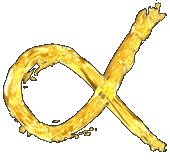

Практические советы донорам. Как не навредить себе и своему вампиру
Напоминаю, что мы ни в коем случае не призываем Вас совершать действия, описанные в статье. Особенно, если Вы не уверены в своей природе или природе того, кто хочеть взять Вашу кровь. Будьте осторожны и бдительны!
Ваш друг рассказал Вам, что ему необходима кровь, и Вы решили стать его донором. Он объяснил, как тяжело без неё приходится, и Вы, скорее всего, прониклись к нему сочувствием и желанием помочь. Запомните это чувство и постарайтесь сохранить его. Оно Вам очень пригодится. И ещё: доверяйте друг другу!
Для начала выберите день, когда будет происходить акт питания. Договоритесь со своим вампиром, когда вам обоим будет удобнее. Выберите способ, которым будет воспроизводиться забор крови (подробнее со способами взятия крови Вы можете ознакомиться в статье "Способы взятия крови"). За день до "мероприятия" можно принять ударную дозу аскорбиновой кислоты (говорят, после этого кровь будет идти активнее), а с утра съесть шоколадку или банан - они помогут обеспечить хорошее настроение и быстрее восстановить силы. Перед действием подготовьте все принадлежности - дезинфицирующее вещество (спирт, йод, перекись водорода, зелёнка), вату, пластырь или бинт, лезвие или скальпель (если Вы выбрали способ пореза), жгут и шприц (если Вы решились на венепункцию), возможно, ланцет, заживляющий крем или бальзам (например, "Спасатель" или "БороПлюс"). Запаситесь хорошим настроением, постарайтесь отбросить все сомнения и набраться уверенности в том, что Вы всё делаете верно. Не бойтесь.
Лучше всего будет, если Вы с вампиром уединитесь там, где Вас никто не потревожит. Приглушите свет (иногда это бывает необходимо, потому что после принятия крови у санга может резко увеличиться чувствительность), лягте или сядьте в удобном положении. Если Вы решили отдать кровь через порез, Вы можете сделать его самостоятельно - тогда у Вас будет возможность регулировать его размер и глубину. Но, если Вы не находите в себе сил ранить себя, доверьте это своему вампиру. В таком случае *при желании* Вы сможете закрыть глаза и не видеть того, что происходит. Дополнительно прочитайте статью "Как резать? (советы вампирам и донорам)". В ней описано, как и чем можно сделать порез, а так же имеются советы по выбору наилучшего места. Если Вы согласились на венепункцию, то *даже если Ваш вампир имеет достаточный медицинский опыт*, на всякий случай, вместе ознакомьтесь со статьёй "Венепункция". Не забывайте о том, что венозные кровотечения довольно-таки опасны, и в случае неудачи или какой-либо случайности Вы можете сильно пострадать. Соблюдайте правила безопасности - не забудьте продезинфицировать место пореза или прокола до и после акта взятия крови и заклеить его пластырем или забинтовать.
После этого желательно отдохнуть - просто прилечь или поспать пару часов. Можно выпить чай или сок. Постарайтесь, чтобы Вы оставались под присмотром хотя бы первые полчаса - иногда после акта питания доноры падают в обморок. Не напрягайтесь в течение этого и последующего дня. Пластырь можно снять через 3-7 дней после питания - в зависимости от того, как быстро у Вас заживают уколы или порезы.
Я могу рассказать, как обычно происходит забор крови в моём случае *мой вампир - сангвинар*. Если Вам захочется, Вы можете использовать это как пример или же придумать свой алгоритм. С утра я стараюсь, чтобы моё настроение оставалось хорошим, и не утомляться. По приходу домой я обедаю и принимаю горячий душ, чтобы кожа разогрелась и кровеносные сосуды расширились. К тому же, это заряжает меня энергией, и после всего я чувствую себя гораздо лучше. Мой санг берёт нужные предметы: спирт, вату, стерильное лезвие, пластырь. Я сажусь так, чтобы и мне, и ему было удобно, и он, продезинфицировав кожу, делает короткий *не больше 1-2 сантиметров* неглубокий *1-2 мм глубиной* порез. Раньше я спокойно наблюдала за тем, как он это делает, но с некоторых пор и это, и вид лезвия, приближающегося к коже, вызывает у меня дикую дрожь, поэтому я закрываю глаза. Санг немного ждёт, пока выделится достаточно крови, а потом начинает её пить. Когда он касается пореза губами, я сосредоточиваюсь на том, чтобы передать ему энергию. Для этого я мысленно рисую этот значок* -

- с некоторых пор он прочно ассоциируется у меня с донорством. При этом я стараюсь "открыться" - то есть не перекрещиваю руки и ноги (по некоторым данным, это самый простой способ защиты от забора энергии). Когда санг насытится, он ещё раз обрабатывает порез, ждёт, когда кровь перестанет течь, и заклеивает порез пластырем так, чтобы стянуть его края друг к другу. Таким образом он заживает так, что становится почти незаметным. Чем глубже и длиннее порез - тем виднее он будет после того, как заживёт, особенно если он не был стянут пластырем. После этого я ложусь в постель, выпиваю чашку очень горячего чая и либо сплю, либо просто лежу. К сожалению, иногда физических нагрузок на следующий день избежать не получается. Пластырь я снимаю через два-три дня, потому что "на свежем воздухе" порезы у меня заживают гораздо быстрее. Несколько дней я мажу порез кремом "БороПлюс". Кстати, у меня два места, где мы делаем порезы - чтобы не оставлять множество шрамов повсюду. Они чередуются через раз. Поэтому, раз мой санг питается примерно раз в месяц, каждый порез "тревожится" через два месяца. Так они успевают более-менее зажить и выглядеть незаметно.
* знак из компьютерной игры "Тургор" (англ. "Tension") и называется "донор"


Автор: RageBruxa.
(собственность vampirecommunity.ru)
[Наверх]